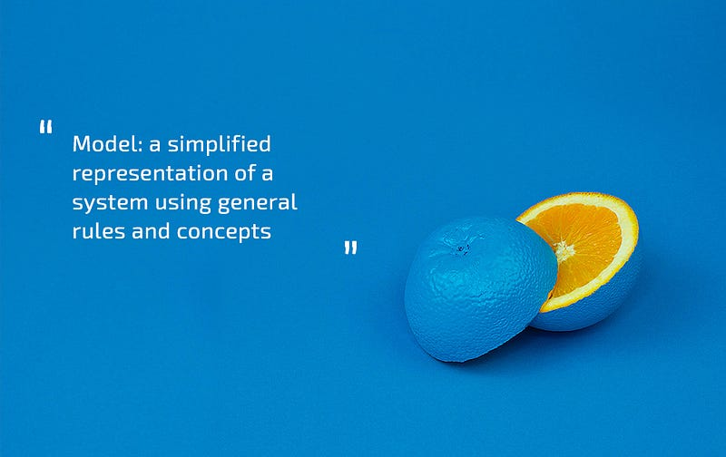

Starting point
Mentoring employees is one of the most important processes in our company. Wise and experienced veterans guide and curate professional growth of new people, helping interns transform into senior test engineers.
When it comes to mentoring, there are many well known approaches one could use: Kolb’s cycle, the learning pyramid, Bloom’s taxonomy, etc. In Apriorit, we use approach based on Individual Development Plans, or IDPs. The gist of the approach is that the mentor creates a series of assignments for the student, designed to teach them skills and give them experience necessary for a new role. All tasks are formulated with SMART criteria in mind, detailing deadlines and ways in which they can be completed. This looks simple enough on the surface. However, as I found out, it’s not that easy in practice.
From middle to senior specialist in one IDP
After I trained my first generation of middle testers, I decided to not just stop there and to try and help them grow into seniors. In order to do this, I tried to analyze strong and weak points of each of my students, their approaches to problem solving, as well as how they fare when it comes to communication and collaboration within a team. I sourced opinions from people that directly worked with them, and based on my conclusions, developed unique IDPs for each of my students.
Each IDP was created with a template-based approach in mind.
This means that each IDP was filled with a range of tasks, each formulated in a very precise fashion with detailed instructions on how it should be completed. Each task was designed to serve as a template on how to solve similar problems in the future. I gave my students articles and books to read and problems to solve. These assignments were designed to give them all necessary skills for senior Test Engineer position over the course of a single IDP.
There are several advantages to creating IDPs with a template-based approach:
- You can better cater the next task to a specific person, since you know what skills and knowledge exactly they developed over the course of a previous stage.
- You know what tools and techniques a person can use and can incorporate this information into your IDP.
- Template-based IDPs allow to reduce risks due to their predictable nature.
When adults perform tasks, formed with a template-based approach in mind, the results will often be very predictable. Similar to McDonalds, no matter in which city you eat, the food will always taste the same.
However, what I found out is that if the student is put in an unfamiliar situation, they tend to fail. When facing the unknown, there is a big chance that they will try to apply the template that they learned to it, and if doesn’t quite fit, then they will be unable to solve the taks. This is the point where you start hearing complaints and excuses: “I don’t have the necessary tools”, “It can’t be done this way”, “It’s impossible to do”, etc.
If we apply Bloom’s taxonomy to the template approach, then we will be able to see that the template-based IDP allows students to reach the level of application, but senior test engineers should be on the level of analysis or synthesis. To make the story short, my students have failed, and thus I have failed as a mentor.
Take 2
For the next IDP, I decided to try something different. Instead of using a template-based approach, I decided to use a model-based approach. Models are something that finally allowed me to grow the skills of my students to the level of analysis and synthesis in the Bloom’s taxonomy.

In order to implement this approach, I increased the level of abstraction. Each new task that I designed was aimed at helping students themselves to form their own individual approaches for solving problems. For example, instead of writing “Read this particular article and working with people and formulating tasks”, I wrote “Develop your own approach and a set of tools for effectively managing and controlling tasks of your subordinates.”
Tasks like this allow middle test engineers to perform certain actions that they wouldn’t be able to do in a template-based approach:
- Analyze the current situation
- Study available tools and resources
- Ask for advice from more experienced employees
- Apply new knowledge in practice
- Reach their own conclusions and maybe come up with something new
This makes it so that employees are not limited by the instructions that you’ve given them, and try to find their own ways to solve the problem. For example, let’s take a position of test-manager. A person that was tutored with a model-based approach when transitioning into this role on the new project will be able to bring their own new ideas, as well as propose some improvements to the already established processes, etc.
The person that is tutored via a template-based approach would not be able to offer something new. This is not necessarily bad though, since sometimes you don’t want to fix things that are not broken. A person like that will be able to pick up existing processes and fit right in.
Conclusion
It’s hard to say that one approach is definitely better than the other. Both have their own advantages and disadvantages. I found out that it’s worth it to pick and choose depending on the situation and personality of an employee that you’re mentoring.
But generally speaking, Junior and middle test engineers will usually perform better when given assignments designed with the template-based approach. Such assignments will help them expand their knowledge quickly and teach them how typical tasks are solved within the company. However, when you need to develop analytical skills in a person, which is often the case when you’re training them for senior position, model-based approach often works best. In any case, you should definitely choose your own solutions depending on your own situation.